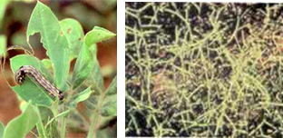
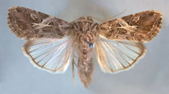

| Home |
| GROUNDNUT |
| 1. Aphids |
| 2. laef hopper |
| 3. thrips |
| 4. red hairy caterpiller |
| 5. leaf miner |
| 6. tobacco caterpiller |
| 7. gram pod borer |
| 8. pod borer (Ear Wig) |
| 9. pod bug |
| 10. Bud borer |
| 11. stem borer |
| 12. termites |
| 13. white grub |
| Questions |
| Download Notes |
PESTS OF GROUNDNUT :: Major Pests :: Tobacco Caterpiller
6. Tobacco caterpillar: Spodoptera litura (Noctuidae: Lepidoptera)
Distribution and status: India, Sri Lanka, Indonesia, Bangladesh, Pacific Islands, China, Pakistan, Korea and Japan.
Host range: Groundnut, citrus, soybean, cotton, tobacco, castor, pulses, millets, safflower, banana, cabbage, tomato, sweet potato, bhendi, chillies, etc.
Damage symptoms: Neonate, green caterpillars feed on the leaves voraciously and present an appearance to the field as if grazed by cattle. Since this pest is nocturnal in habit larvae hide under the plants, cracks and crevices of soil and debris during the day time. Faecal pellets are seen on the leaves and on the ground which is the indicator of the pest incidence.
 |
Bionomics: Adult moth is stout with wavy white markings on the brown forewings and white hind wings with a brown patch along its margin. Eggs are laid in groups and covered with hairs on the leaves. The egg period is 4-5 days. Larva is stout, cylindrical, pale brownish with dark markings. The body may have row of dark spots or transverse and longitudinal grey and yellow bands. When fully grown, measures about 35-40 mm in length. The larval period is 14-21 days. It pupates in earthen cells in soil for 15 days. Life cycle is completed 30-40 days.
 |
ETL: 1-2 egg masses per meter crop row of 7-12 plants or pheromone trap catches exceed 100 moths per night, averaged over a week.
Management
- Grow castor as a border (or) intercrop in groundnut fields to serve as indicator (or) trap crop.
- Grow resistant cultivars like ICGV 86031, FDRS 10
- Monitor the emergence of adult moths by setting up of light traps.
- Set up pheromone trap (Pherodin SL) to monitor, attract and kill the male moths @ 12 nos./ha and change the septa once in 3 weeks.
- Collect egg masses and destroy.
- Collect the gregarious larvae and destroy them as soon as the early symptoms of lace-like leaves appear on castor, cowpea and groundnut.
- Avoid migration of larvae by digging a trench 30 cm deep and 25 cm wide with perpendicular sides around the infested fields.
- Prepare a bait with following for 1 ha. Rice bran 12.5 kg, molasses or brown sugar 2.5 kg, carbaryl 50 WP 1.25 kg (mix the ingredients to obtain a homogenous mixture sprinkle water gradually and bring the bait to a dough consistency. Distribute the above bait on the soil, in and around the field in the evening hours immediately after preparation).
- Apply NPV @ 250 LE/ha with crude sugar 2.5 kg/ha which is as effective as that of chlorpyriphos at 200 g a.i./ha at 7 days interval.
- Apply any one of the following insecticides per ha to control early instar larvae (1st to 3rd instar). Carbaryl 10 D 25 kg, carbaryl 50 WP 2 kg, quinalphos 25 EC 750 ml, phenthoate 50 EC 1250 ml and dichlorvos 76 SC 750 ml.